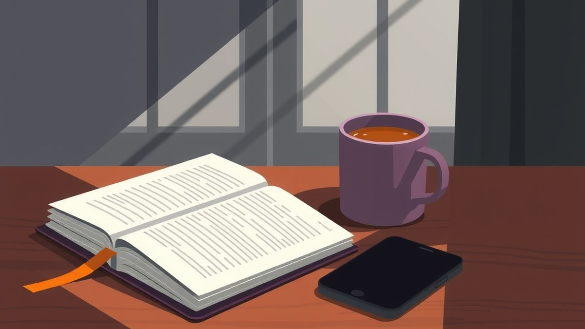
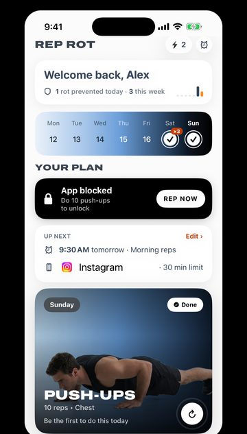

Short-Form Video and Attention Span: What the Research Says
Is short-form video shrinking your attention span? What 71 studies and three experiments show, what's a myth, why the habit matters more than minutes.


TL;DR
- A 2025 review of 71 studies and about 98,000 people found heavier short-form video use is linked to weaker attention and impulse control. It's a correlation, not proof of cause.
- Compulsive, can't-stop watching was linked to worse focus much more strongly than total minutes.
- Small lab experiments show a short burst of fast clips can blunt focus right afterward. Nobody has shown lasting damage.
- The "8-second attention span, shorter than a goldfish" stat is a myth.
- Attention can come back: in a trial of 467 adults, two weeks of blocked mobile internet improved sustained attention.
- The fix is less about total time and more about the moment you can't stop. Put a speed bump there.
You open a book at 9 p.m. You read the same paragraph three times. Your hand drifts to the phone, and suddenly it's 9:40 and you've watched sixty strangers in fifteen-second slices.
Then the thought arrives: my attention span is gone. Short videos broke it.
That fear is everywhere, and the headlines swing between "brain rot" and "nothing to see here." The research on short-form video and attention span is more interesting than either. Something real is going on. But it's probably not that your brain has shrunk to a goldfish's. It's that one particular way of watching trains a habit, and habits can be retrained.
Does short-form video ruin your attention span?
The short answer: heavy use is clearly linked to weaker focus, and short bursts can hurt focus in the moment. Whether it causes lasting harm hasn't been shown.
The biggest piece of evidence is a 2025 meta-analysis in Psychological Bulletin by Nguyen and colleagues at Griffith University. It pooled 71 studies with 98,299 participants. People who engaged more with short-form video tended to score worse on cognition overall, with the clearest links to attention and inhibitory control (the ability to stop yourself from doing something). The authors describe the overall link as moderate.
Now the caveats, because they matter:
- It's mostly snapshots. Most of the studies measured people once. That can't tell you whether the videos weaken attention, or whether people who already struggle to focus are drawn to them. Probably some of both.
- It's mostly TikTok and Douyin. Despite the headlines, coverage of the review notes that no included study looked directly at Instagram Reels or YouTube Shorts. They work the same way, so it's a reasonable guess, but it is a guess.
- Measurement varied. Some studies counted hours. Many used questionnaires about compulsive use. That difference turns out to be the most useful finding in the paper.
It's the habit, not the hours
Here's the part most headlines skip. When the review split studies by how they measured use, plain time spent was only weakly linked to poorer cognition. Scales that measured compulsive use (feeling unable to stop, getting restless without it, losing track of time) showed noticeably stronger links.
Read that carefully and it changes the question. An hour of short videos you chose, watched and closed is not the same as an hour you kept trying to stop and couldn't. The second one is the pattern tied to worse focus.
That fits what we already know about attention on screens. Gloria Mark at UC Irvine found people now stay on one screen for about 47 seconds on average before switching, and about half of those switches are self-interruptions: nobody pinged us, we just went. We dug into the cost of that switching in How Long Does It Take to Refocus After a Notification?
A feed that serves a new clip every 15 seconds is practice at exactly that move: notice a flicker of boredom, swipe. Practice something hundreds of times a day and it gets easy. That's not a broken brain. It's a well-trained reflex pointed in a direction you didn't choose.
What the experiments show (and don't)
Correlations can't show cause. A few small experiments get closer, by giving people short videos in a lab and testing them right after.
| Study | What they did | What happened | Keep in mind |
|---|---|---|---|
| Chiossi et al., 2023 (CHI conference) | 60 people watched TikTok, Twitter or YouTube, or rested, during a memory task | Only the TikTok group got worse at remembering to do a planned action later | Small, one session, lab task |
| San Diego State University, 2025 | 242 students; half scrolled TikTok for 5 minutes before reading news, tracked with eye-tracking | The scrollers skimmed more, jumping between paragraphs and images | One sitting; measured reading behavior, not comprehension scores |
| Castelo et al., 2025 (PNAS Nexus) | 467 adults blocked mobile internet on their phones for two weeks; calls and texts still worked | Sustained attention improved, along with mental health and well-being | Not everyone stuck to it; people knew what the study was about |
Put together: rapid-fire clips seem to leave a short hangover. Five minutes of swiping before a task you need to focus on is a bad warm-up. That's useful to know, and it's something you can act on tonight.
What nobody has shown is that short videos permanently damage attention. The one trial that cut phone internet points the other way: attention improved within two weeks. The authors compared the size of the gain to about ten years of age-related decline in that skill. That's a comparison of size, not a promise, but it's a hopeful one.

The goldfish stat is a myth
You've seen it: "Humans now have an 8-second attention span, shorter than a goldfish." It came from a 2015 Microsoft Canada marketing report, which credited a website for the number. When the BBC traced it in 2017, the figure didn't come from Microsoft's own research, and there was no evidence that goldfish have short attention spans either.
Attention isn't one number anyway. It depends on the task. The same person who can't read three pages will happily play a two-hour video game or finish a whole season in a weekend. The question isn't "how long can you pay attention?" but "what have you trained yourself to do when something gets a little slow?"
There is one real "shrinking" finding worth knowing. A 2019 study in Nature Communications found that collective attention to any single topic (hashtags, search trends, Reddit posts) now rises and fades faster than it used to. That's about what a whole society talks about, not about your individual brain, but it shows the pace of the feed is real.
How to get your attention span back
If the problem is a trained reflex at the moment of boredom, that's where to work. Not on a heroic month offline. Pick two or three of these.
| Change | How | Why it helps |
|---|---|---|
| Don't scroll right before focus work | No feeds in the 15 minutes before reading, studying or a hard task | Avoids the short hangover seen in the lab studies |
| Put an end point on the feed | Settings → Screen Time → Time Allowances (App Limits on iOS 26 and earlier) | The feed has no bottom; a limit gives it one. Steps in How to Set App Limits on iPhone. |
| Make the app a little harder to reach | Touch and hold the icon → Remove App → Remove from Home Screen | Turns an automatic swipe into a choice |
| Watch on purpose | Pick a time and a number: "20 minutes after dinner," then close it | Chosen viewing is the pattern least linked to focus problems |
| Practice the long thing, briefly | 10 minutes of reading or one full-length video without switching, then stop | Rebuilds tolerance for "a little slow" in a dose you can win |
| Give the urge somewhere to go | Ten squats or push-ups when you catch yourself reaching | Breaks the swipe reflex with something physical and finite |
About that last one. The urge to swipe is often a small itch to escape something boring or hard. A short burst of movement scratches it in under a minute and can't turn into a 40-minute hole. We explain why that works better than gritting your teeth in Willpower Isn't the Problem.
- Squats: feet about shoulder-width, sit back as if to a chair, chest up, stand. Easier: sit down to a real chair and stand back up.
- Push-ups: body in one line from head to heels. Easier: hands on a wall, counter or desk; the higher the surface, the lighter it gets.
Stop if anything hurts. If you have an injury, a heart condition, are pregnant or haven't exercised in a long time, check with a doctor first.
Is the damage permanent?
There's no good evidence that it is. The lab effects were measured minutes after watching, and the blocking trial saw attention improve in two weeks. Treat it like any skill you've let slide: it comes back with practice, not with guilt.
When it's more than distraction
If you can't focus on anything, most days, whether or not you've been on your phone, that's worth raising with a doctor. Ongoing trouble concentrating can have many causes, from sleep to stress to ADHD, and a feed is rarely the whole story. If scrolling has become a way to escape feelings that are heavy or getting worse, talk to a mental health professional. In the US, you can call or text 988 any time.
Where Rep Rot fits
The research points at one moment: the swipe you meant to stop at and didn't. Rep Rot is built for that moment. You set limits on the apps you lose hours to. When you hit one, the app stays locked until you get up and move: a set of squats, push-ups, sit-ups, pull-ups or a plank, counted by your iPhone's camera on the phone itself. Nothing is recorded or uploaded, and Rep Rot can't see which apps you use.

It won't rebuild your attention for you, and Screen Time limits can be worked around by anyone determined. What it does is turn "one more" from a reflex into a decision, which is the exact habit the research flags.
Rep Rot locks the apps you lose hours to until you get up and move. It's in testing now; email help@reprotapp.com for early access.
Sources: Nguyen et al., "Feeds, feelings, and focus: A systematic review and meta-analysis examining the cognitive and mental health correlates of short-form video use," Psychological Bulletin (2025), summarized by PsyPost and Reason; Chiossi, Haliburton, Ou, Butz & Schmidt, Short-Form Videos Degrade Our Capacity to Retain Intentions, CHI '23 (2023); San Diego State University, SDSU study links TikTok scrolling to poor study focus (2025); Castelo et al., Blocking mobile internet on smartphones improves sustained attention, mental health, and subjective well-being, PNAS Nexus (2025); Gloria Mark interview, University of California News; Simon Maybin, Busting the attention span myth, BBC (2017); Lorenz-Spreen, Mønsted, Hövel & Lehmann, Accelerating dynamics of collective attention, Nature Communications (2019); Apple, Set Screen Time Schedules and Time Allowances on iPhone; 988 Suicide & Crisis Lifeline.